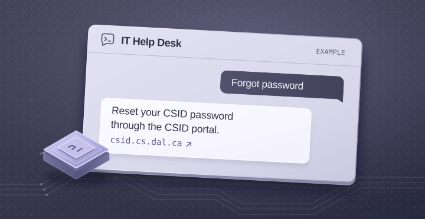

Retrieve before generating
Fuzzy intent matching checks a curated set of campus support resources first. Matching questions receive relevant links, and other requests are passed to a local Ollama model.
Local AI application
A browser-based help-desk assistant that combines curated technical resources with local language-model inference.

Common support questions benefit from a direct, relevant resource. More open-ended questions need a different path. The challenge was to combine both behaviours in one straightforward chat interface.
A focused question-and-answer interface
Intent matching and curated support links
Local model fallback for open-ended queries
Fuzzy intent matching checks a curated set of campus support resources first. Matching questions receive relevant links, and other requests are passed to a local Ollama model.
FastAPI serves a single-column browser chat and a POST /chat endpoint. The interface brings the request, response and next useful resource into one conversation.
The implementation includes rate limiting at six requests per minute per IP, a short in-process conversation buffer and error handling around the local model call.
An interactive illustration
See how common support questions map to curated resources.
Choose a support question to explore the resource-first flow.
Preset responses from the repository’s resource mappings. Local inference runs when you start the project with Ollama.
Open to software engineering opportunities
Front-end, back-end and full-stack roles.
Based in Halifax. Open to opportunities across Canada.